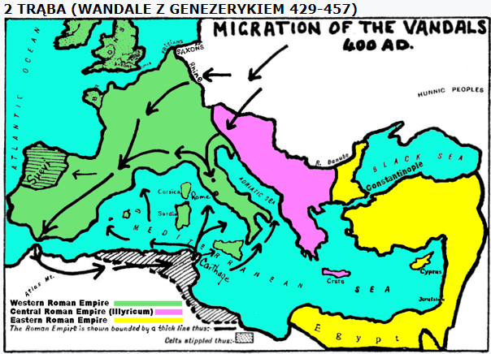
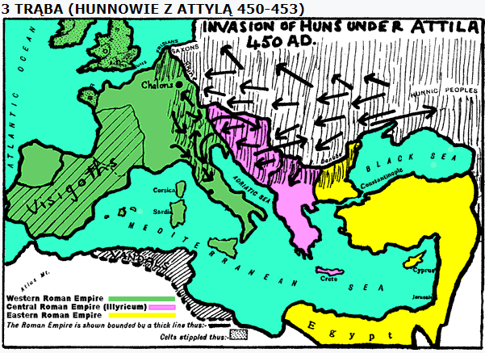
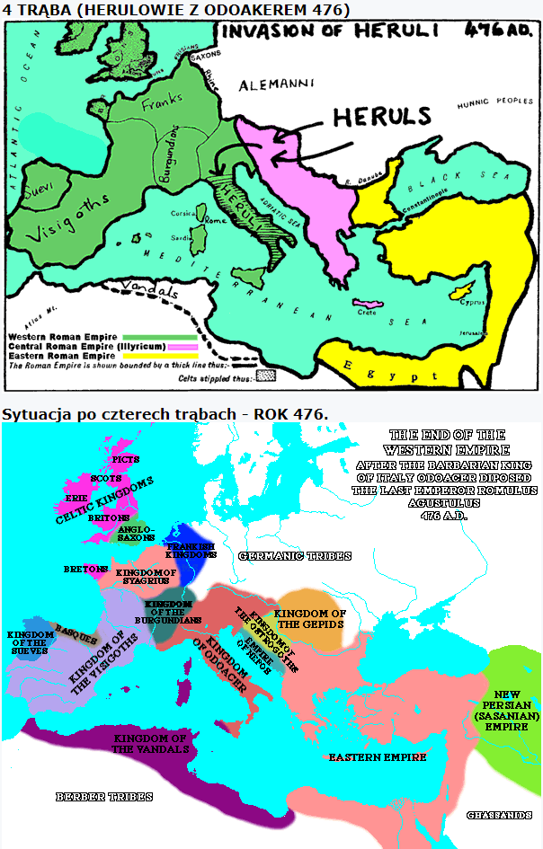

.
8 Rozdział (cz.2)
Ciąg dalszy rozdziału 8.
Druga trąba.
„I zatrąbił drugi anioł; i coś jakby wielka góra ziejąca ogniem zostało wrzucone do morza; a jedna trzecia morza zamieniła się w krew,. (9) i jedna trzecia zwierząt żyjących w morzu zginęła, a jedna trzecia okrętów uległa zniszczeniu.” (8:8-9).
Zniszczenie z ziemi przenosi się na morze.
Kolejna kara Boża została zadana rzymianom na morzu przez wodza Wandalów Genzeryka.
Po wielkich zwycięstwach odniesionych w Galii, Wandalowie wdarli się do Hiszpanii, a potem przez Gibraltar do północnej Afryki, gdzie wkrótce opanowali Kartaginę.
„W maju 429 roku przeprawili się Wandalowie przez cieśninę Gibraltarską do Afryki i ruszyli wzdłuż wybrzeża ku wschodowi, grabiąc po drodze i dopuszczając się okrucieństw, zwłaszcza wobec duchowieństwa katolickiego, ale witani radośnie przez prześladowanych donatystów i upośledzonych kolonów, którym zdawali się nieść wyzwolenie od religijnego i socjalnego ucisku…. W roku 439 niespodziewanym atakiem opanował Kartaginę, do której przeniósł następnie swoją stolicę. Ze zdobytych w porcie kartagińskim okrętów zorganizował flotę, przy pomocy, której począł trapić łupieżczymi wyprawami wybrzeża Italii i Sycylii” (Dzieje Rzymskie, część 3, Ludwik Piotrowicz, strona 223).
Kwestią czasu i wysiłków przedsiębiorczego wodza było opanowanie Sycylii, Korsyki i Sardynii.
31 maja 455 roku Gejzeryk, wódz Wandalów wyruszył z Afryki i stanął pod Rzymem, które wpadło bez walki w jego ręce i przez dwa tygodnie było przez nich systematycznie łupione!
W roku 457 cesarz Majorian usiłował wyprawić przeciwko Genzerykowi silną flotę rzymską, w liczbie ponad trzystu wielkich, nowo zbudowanych okrętów i niezliczoną ilość mniejszych jednostek. Flota ta, zgromadzona u wybrzeży Hiszpanii, miała niespodziewanie zaatakować Wandalów.
Jednak poinformowany o tym Genzeryk nie czekał na atak.
Pod osłoną nocy podpłynął do rzymskiej armady, i napadł na stojące w porcie okręty. Część ich spalił i zatopił, a wiele uprowadził z sobą.
Wschodni cesarz, Leon I, zaczął budować drugą flotę, za sumę ponad 130 tysięcy funtów złota. Liczyła ona 1113 dużych okrętów i wiozła ponad stutysięczną armię pieszą, prócz załóg okrętów. Dołączyły do niej floty Herakliusza i Marcelina zbudowane w Italii. Flota płynęła w stronę afrykańskiego wybrzeża.
Ale Genzeryk ponownie nie czekał bezczynnie.
Obsadził swoje okręty najdzielniejszymi Wandalami i Maurami i do okrętów przywiązał liczne małe łodzie wypełnione łatwopalnymi materiałami. Pod osłoną nocy okręty te wpłynęły między flotę rzymską, a wówczas odczepiono łodzie po ich uprzednim zapaleniu. Pozostała cześć floty Genzeryka otoczyła armadę rzymską i przystąpiła do jej niszczenia.
Wśród Rzymian powstało ogromne zamieszanie a potem panika.
Wkrótce cała rzymska flota stanęła w płomieniach, i wyglądało to tak, jak gdyby ktoś wrzucił w morze płonącą górę.
Po zwycięstwie Genzeryk stał się absolutnym panem morza, pustosząc bezkarnie Italię, Trację, a nawet Azję Mniejszą.
Ówcześni mieli świadomość tego, że Wandalowie byli tylko narzędziem w ręku Bożym. Niejaki Sylwan, kapłan z Marsylii tak pisał:
„Jakie sądy wykonuje Bóg nad nami przez Gotów i Wandalów, wykazuje historia. Oni codziennie wzrastają, a my malejemy, oni się podnoszą, a my się uniżamy, oni kwitną, a my więdniemy, gdyż sprawiedliwy jest Pan i sprawiedliwy jest sąd Jego. Jesteśmy osądzeni sądem, który Pan wykonuje obecnie nad nami, i dlatego ku naszej hańbie i naszemu zginieniu powstał lud, który ciągnie z miejsca na miejsce, od miasta do miasta i pustoszy wszystko. […] Lecz ta ręka niebieska, która ich prowadziła do Hiszpanii, aby ukarać tamtejsze zbrodnie, prowadziła ich jeszcze dalej, aż do Afryki, aby i tę spustoszyć. Tak oni sami to przyznają, że nie jest to robota, którą oni sami wykonują, ale że są raczej pędzeni rozkazem Bożym. Z tego można poznać, jak wielkie są nasze przestępstwa, jeżeli dla ukarania nas barbarzyńcy wbrew swej woli są zmuszeni wędrować, zgodnie ze słowami, które wypowiedział kiedyś burzyciel państwa izraelskiego, król asyryjski: „Nadto, czy bez woli Pańskiej przyciągnąłem do tej ziemi, aby ją spustoszyć? Pan rzekł do mnie: Ciągnij do tej ziemi, a spustosz ją.” („Panowanie Boże”, tom VII, strona 11-14).
Dwie pierwsze „trąby”, opisują klęski zadane Imperium Rzymu na lądzie przez Zachodnich Gotów (Wizygotów) dowodzonych przez Alaryka, a następnie pogrom rzymian na morzu, dokonany przez wodza Wandalów, Genezeryka.

Kolejna, „trzecia trąba”, opisuje następny cios, zadany Imperium Romanum…
Trzecia trąba.
„I zatrąbił trzeci anioł; i spadła z nieba wielka gwiazda płonąca jak pochodnia, i upadła na trzecią część rzek i na źródła wód. (11) A imię gwiazdy tej brzmi Piołun. I jedna trzecia wód zamieniła się w piołun, a wielu z ludzi pomarło od tych wód, dlatego że zgorzkniały.” (8:10-11).
Piołun.„Piołun” w księdze Jeremiasza oznacza gorycz, jakiej naród wybrany doznał w wyniku odstępstwa od Boga. Upokorzenia i klęski zadane zostały przez narody pogańskie:
„Dlatego tak mówi Pan Zastępów, Bóg Izraela: Oto Ja nakarmię ich, to jest ten lud, piołunem i napoję ich wodą zatrutą.(20) Śmierć wdarła się przez nasze okna, weszła do naszych pałaców, aby wytracić dziecko z ulicy, młodocianych z placów!” (Jeremiasza 9:14-20).
„Lecz u proroków Jeruzalemu widziałem zgrozę: Cudzołożą i postępują kłamliwie, i utwierdzają złoczyńców w tym, aby żaden nie odwrócił się od swojej złości; toteż wszyscy stali się dla mnie jak Sodoma, a jego mieszkańcy jak Gomora. (15) Dlatego tak mówi Pan Zastępów o prorokach: Oto Ja nakarmię ich piołunem i napoję ich trucizną, gdyż od proroków Jeruzalemu wyszła bezbożność na cały kraj.” (Jeremiasza 23:14-15).
Wody, rzeki oznaczają narody:
„To, co jako słowo Pana doszło proroka Jeremiasza o Filistynach, zanim faraon zdobył Gazę. (2) Tak mówi Pan: Oto podnoszą się wody z północy i stają się strumieniem, który wzbiera; zalewają ziemię i wszystko, co ją napełnia, miasta ich mieszkańców. Krzyczą ludzie i zawodzą wszyscy mieszkańcy ziemi” (Jeremiasza 47:1-2).
W symbolu „trzeciej trąby” przedstawiono trzeci ważny czynnik, jaki przyczynił się do upadku Zachodniej części Imperium Rzymskiego.
„Gwiazda” oznacza w języku prorockim anioła (posłańca) Bożego, albo – jak tutaj –demonicznego. Jego pojawienie się przynosi światu nieszczęście, „płonąca pochodnia”, to pożoga wojenna, ogarniająca wszystko wokół, niosąca gorycz, ból, śmierć i zniszczenie.
Wydarzenia „trzeciej trąby” wypełniły się w krwawych najazdach Hunnów, którzy pod wodzą okrutnego Attyli, jak potop zalali kraje środkowej i zachodniej Europy, koncentrując swe działania głównie właśnie nad rzekami Europy…
„Wkrótce po objęciu rządów przez Attylę, Teodozjusz pod grozą wojny musiał się zobowiązać do płacenia daniny w podwójnej wysokości. Mimo zawartego układu rzucił Attyla w roku 441 swe hordy na naddunajskie prowincje. Attyla powtórzył swój najazd znów w 447 roku.Wojska rzymskie zostały rozbite, a Hunnowie rozlali się po naddunajskich prowincjach i zagrozili samej stolicy. Z trudnością udało się skłonić Attylę do zawarcia pokoju, w którym zażądał dodatkowo opróżnienia przez ludność pasa ziemi wzdłuż prawego brzegu Dunaju szerokości 5 dni marszu, aby odgrodzić cesarstwo. Upokarzająca ta dla cesarstwa zależność od mongolskiego barbarzyńcy trwała, aż do śmierci Teodozjusza (450)”. (Dzieje Rzymskie, część 3, Ludwik Piotrowicz, strona 229).
Podobnie opisano zbliżone wydarzenia w przeszłości:
„przeto Pan sprowadzi na nich wody Rzeki, potężne i wielkie, króla asyryjskiego i całą jego potęgę. I wystąpi ze wszystkich swoich koryt, i wyleje ze wszystkich swoich brzegów” (Izajasza 8:7).
Hunnowie byli dzikim plemieniem mongolskim, niesłychanie drapieżnym i krwiożerczym. W roku 375 wdarli się do Europy ze środkowej Azji i w niszczycielskim pochodzie przeszli przez kraje słowiańskie od Wołgi po Karpaty, i osiedlili się na równinie węgierskiej.
Stali się szczególnie niebezpieczni dla Imperium Rzymu z chwilą, gdy w roku 433 na ich czele stanął straszliwy Attyla, który urządzał łupieżcze wyprawy na zachodnie i wschodnie prowincje Cesarstwa.
Trzy razy pod rząd pobił on wojska rzymskie, spustoszył obszary od Hellespontu po Termopile, zagrażając nawet Konstantynopolowi. Spustoszył ponad siedemdziesiąt miast, łupiąc i mordując ich mieszkańców.
Attyla był rozkochany w wojnie, pożarach, mordach i wszelakich okrucieństwach. Przechwalał się, że jest „Biczem Bożym”, a w miejscu „gdzie jego koń stąpnie nogą, tam ani trawa już więcej nie porośnie”!
Historyk Gibbon, pisze, że Attyla nazwał sam siebie również „synem Marsa”, po tym jak jego koń skaleczył się o wystający z ziemi miecz, który on wykopał twierdząc, że ten „miecz spadł z Marsa.”
Czy to nie koresponduje w cudowny sposób z proroctwem: „I zatrąbił trzeci anioł; i spadła z nieba wielka gwiazda” - Naprawdę Wielki jest nasz Ojciec Wszechmogący w swej mądrości!
Około roku 450 Attyla poprowadził na Cesarstwo swoje hordy w liczbie 700.000 wojowników.
W szeregach najeźdźców oprócz Hunnów były także inne narody i plemiona z obszarów, jakie znalazły się pod ich panowaniem. Na czele tej armii Attyla ruszył z Węgier na zachód, a po sforsowaniu Renu podążał w głąb Francji docierając aż do Orleanu. Trasa tego pochodu prowadziła przez obszary, w których biorą początek liczne rzeki – jedne płynące na północ, inne na południe.
Wszędzie gdzie się pojawił, pozostawiał tylko ziemię i niebo - ślady jego marszu znaczyły pożogi, mordy i okrucieństwa. Była to właśnie owa gorycz piołunu, od której ginęli mieszkańcy tych obszarów.
W 451 roku na polach Katalonii drogę najeźdźcom zagrodziły legiony rzymskie dowodzone przez Aecjusza oraz Wizygoci pod dowództwem Teodoryka, a także inne, liczne plemiona germańskie. Wywiązała się zacięta, trwająca pełne trzy doby walka. Według wielu kronikarzy podobnej bitwy nie było w historii ani przedtem ani potem. Były to śmiertelne zapasy między kulturą europejską a azjatyckim barbarzyństwem. Poległo od 160 do 300 tysięcy ludzi. Sama bitwa nie została rozstrzygnięta, gdyż żadna ze stron nie została całkowicie pokonana.
W wyniku tej bitwy Hunnowie wycofali się na Węgry, jednak już w następnym roku Attyla podjął wielką wyprawę na Italię, zdobył Akwileję, Padwę, Konkordię i kilka innych. Dotarł też pod Rzym, jednak odstąpił od zdobycia miasta na pokorną prośbę papieża Leona I, od którego przyjął sowity okup.
„W roku 452 wpadł niespodziewanie do Italii. Hunnowie rozpuścili szeroko zagony na równinie nadpadańskiej, zamierzając skierować się na Rzym. Aecjusz był tak najazdem zaskoczony, że myślał o ucieczce z Italii wraz z cesarzem… Kiedy w obozie nad rzeką Mincio zjawiło się poselstwo rzymskie z papieżem Leonem I na czele, przyjął Attyla ofiarowane warunki i wycofał się z Italii”.(Dzieje Rzymskie, część 3, Ludwik Piotrowicz, strona 231).
O straszliwej bitwie w Katalonii historyk Gibbon pisał:
„Na katalońskiej równinie bitwa była tak okropna i krwawa, że potok obok płynący był przepełniony krwią, którą pili wojownicy dla wielkiego pragnienia…” (Zmierzch Cesarstwa Rzymskiego, tom VI, strona 269).
Ówcześni ponownie zrozumieli, że Attyla jest kolejnym narzędziem Bożym dla ukarania odstępstwa oficjalnego kościoła:
„Cesarstwo umierało bez nadziei na przetrwanie, ustępując miejsca kolejnym barbarzyńskim władcom. Ale czy rzeczywiście ci prymitywni ludzie, upojeni krwią i szałem, niszczący dla samej przyjemności niszczenia, rabujący z przyzwyczajenia i zabijający dla samej rozkoszy zabijania, mogli budzić tylko odrazę i rozpacz? Czy byli oni tylko wcielonymi diabłami?”
W „De Gebumatione Dei”, napisanym u schyłku pierwszej połowy V wieku mówił niejaki ksiądz Sawiusz (390?-484?):
„[…] Dziwimy się, że nasze mienie wpada w ręce wojowników, którzy brzydzą się naszymi ułomnościami […] Jedyną przyczyną naszej klęski jest zepsucie naszych obyczajów. […] Barbarzyńcy bez wątpienia byli narzędziem Boga. Czyż Attyla nie ogłosił się Biczem Bożym? A czyż Bóg wielu barbarzyńców, ochrzczonych przez ariańskich księży, nie był Bogiem wszystkich chrześcijan? Czyż ci barbarzyńcy, którzy niszczyli rzymską cywilizację znając jedynie jej wady i ułomności, nie byli zdolni, patrząc przez pryzmat chrześcijaństwa, ocenić jej dobrodziejstw?”.
Podobne pytania stawiali sobie w tym okresie papieże, a wraz z nimi biskupi. Augustyn, wyciągając moralne nauki z wydarzeń, które tak boleśnie przeżywał, pisał do swych diecezjan:
„[…]Ileż my wycierpimy! Często zalewamy się łzami i nie możemy się pocieszyć…”
A Hieronim dodaje:
„Gdybym miał sto języków i żelazny głos, jeszcze nie mógłbym opowiedzieć plag, które nas dosięgły!”. (Jacques Marcier, „Dwadzieścia wieków historii Watykanu”, strona 68).
Attyla zgotował Rzymowi straszliwe klęski nad rzekami: Marną, Rodanem i Padem. Rzeki te spłynęły krwią.
Attyla z bogatym łupem powrócił nad Dunaj, a gdy zmarł, jego ciało pogrzebano pod łożyskiem tej rzeki (skierowując jej bieg na ten czas w inne koryto). Wody Dunaju do dziś płyną nad jego grobem.
Po śmierci Attyli, która nastąpiła w roku 453, Hunnowie odeszli z powrotem na wschód i wkrótce zaginął po nich wszelki ślad.

Czwarta trąba.
„I zatrąbił czwarty anioł; i ugodzona została jedna trzecia słońca, i jedna trzecia księżyca, i jedna trzecia gwiazd, tak, iż jedna trzecia ich część zaćmiła się i dzień przez jedną trzecią część swoją nie jaśniał; podobnie i noc.” (8:12).
Oczywiście nie chodzi tu, jak już zresztą wcześniej dowodziłem, o literalne zaćmienie słońca, czy księżyca.
Symbolika ciał niebieskich znana jest Biblii.
Pierwszą próbę wyjaśnienia znajdujemy już w 1 Mojżesza 37:9-10, gdzie „słońce” symbolizowało ojca (Jakuba) - patriarchę, „księżyc”– jego żonę, a „gwiazdy” – braci Józefa.
Słońce, księżyc i gwiazdy wyobrażają władców i rządy.
W okresie „czwartej trąby” zniszczenie dotyka 1/3 „słońca”, „księżyca” i „gwiazd”.
Podobnych symboli użyto w Starym Testamencie, odnosząc je do upadku właśnie ziemskiej potęgi:
„Uderzają na miasto, szturmem zdobywają mur, wpadają do domów i wdzierają się oknami jak złodzieje. (10) Drży przed nimi ziemia, trzęsie się niebo, słońce i księżyc są zaćmione, a gwiazdy tracą swój blask. (11) I Pan wydaje swój donośny głos przed swoim wojskiem, gdyż bardzo liczne są jego zastępy i potężny jest wykonawca jego rozkazu. Tak! Wielki jest dzień Pana i pełen grozy, któż go przetrwa? (12) Wszakże jeszcze teraz mówi Pan: Nawróćcie się do mnie całym swym sercem, w poście, płaczu i narzekaniu” (Joela 2:9-12).
W okresie pierwszych trzech „trąb” została zniszczona „trzecia część ziemi”, „morza”, „źródeł”, „drzew” i „trawy”.
W ten sposób opisano najazdy na Imperium Rzymu – Wizygotów, Wandalów i Hunnów. Te, następujące kolejno ciosy, doprowadziły Rzym pogański do katastrofalnego stanu, zapowiadającego upadek jego Zachodniej części, co ostatecznie miało się dokonać w roku 476.
„Czwarta trąba” przedstawia najazdy germańskiego plemienia Herulów, dowodzonych przez Odoakera, który w roku 476 zlikwidował władzę i godność cesarską, usuwając ostatniego cezara, młodego, gdyż zaledwie szesnastoletniego, Romulusa Augustulusa, koronowanego rok wcześniej przez rzymskiego patrycjusza (własnego ojca), Orestesa.
Usunięcie cezara, zlikwidowanie urzędów i zajęcie Zachodniej części Imperium wraz z Rzymem, jest równoznaczne z zaćmieniem 1/3 „słońca”, księżyca” i „gwiazd”, które przez kilka stuleci świeciło na politycznym niebie Zachodniej Europy, stanowiącej 1/3 całego obszaru Imperium Rzymu.
Gdy zważyć, jaką rolę odgrywali i jaką godność i władzę posiadali za czasów dawnej Republiki Rzymskiej konsulowie i senat, a potem – po upadku Republiki – rzymscy cesarze, przed którymi drżały i chyliły pokornie do ziemi swe czoła poselstwa i władcy licznych krajówi narodów, prosząc o wysłuchanie, pomoc, ochronę i względy, to skasowanie tych trzech urzędów i godności oraz zajęcie 1/3 pierwotnego obszaru Imperium Rzymu, trafnie zostało przyrównane do zaćmienia 1/3 słońca, księżyca i gwiazd.
„Data 476 roku, kiedy Odoaker ogłoszony został królem, a cesarz Romulus złożony z tronu, uchodzi pospolicie za kres historii rzymskiego cesarstwa i dziejów starożytnych w ogóle.Ma to o tyle rację, że istotnie zostało wówczas zlikwidowane zachodnio-rzymskie cesarstwo, a na gruzach jego poczęły swój rozwój nowe organizacje państwowe” (Dzieje Rzymskie, część 3, Ludwik Piotrowicz, strona 239).
Tylko 1/3, gdyż na arenie pozostało jeszcze Imperium Centralno-Wschodnie, zgodnie z ówczesnym podziałem Imperium, gdzie można było rozróżnić:
1. Zachodnia część, z Rzymem, jako jego centrum.
2. Rdzeń greckiego świata, obejmujący bałkański półwysep i Azję Mniejszą, z Konstantynopolem, jako jego centrum.
3. Orientalna część, obejmująca Syrię, Palestynę i Egipt, z Aleksandrią, jako jego centrum.
Konstantynopol nie został zdobyty, jak i Wschodnia część Imperium nie została została jeszcze tknięta.

↞ Spis treści
kopia strony: https://jehoszua.ddv.pl/readarticle.php?article_id=36 Wszelkie prawa autorskie należą się autorowi tej strony
a759e284b1